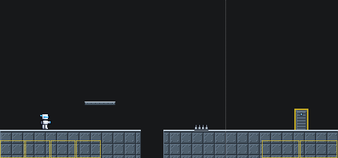
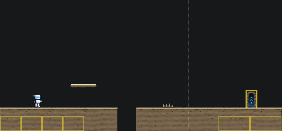
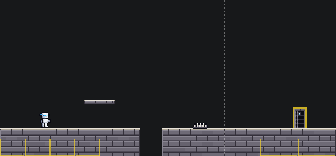

Group 1 of 3: the area between boss rooms. Group 2 (DRIFTER, the E-Tank and the EXP orb) and group 3 (the HUD) come after these picks, so they can be drawn to sit on what you choose here.
The owner, 5 Nov 2026: "new plan. draw up all 17 slices world pieces just like you did here(floor, platform, exit door, spikes). i really like the castle one for dragon, and the bedrock one for Ground , and the Steel plates for Steel (i want a couple variants for the steel door though)"
The owner's answers, the same day. Every slice gets its own boss door and backdrop too: "yes, everything. 6 wildly different backdrop variants per slice since the player has to look at it constantly. on a few backdrops, consider a layered parallax effect." Steel's door variants, for which door: "both". Into the game: "pushed in batches of ~6 slices."
Each slice: six backdrops, and three variants of the floor, platform, spikes and both doors. The boards to the right were the first round, one look for every slice, and stay as a record.
Every picture is drawn at the game's real size and shown twice as big. The dotted line is where a 320-wide screen ends; the gold boxes are the see-through thumb pads. The strip under each picture is the same piece in front of all seventeen bosses' backdrops, Typeless to Steel. Moving parts, like the door's pulse, are shown at one moment. Sizes, hit boxes and jumps do not change: this is only how things look.
Drawn by Claude at the owner's request, 5 Nov 2026. Nothing here is in the game yet.


